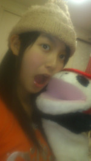
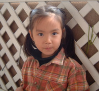
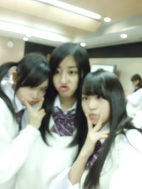
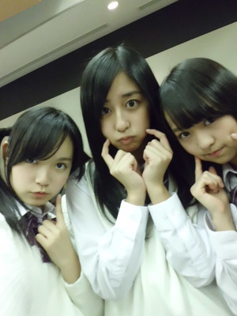

返回列表-BACK TO INDEX
31 この際、乃木坂４６は「すっぴんアイドルグループ」として活動して行ったらどうだろ？
この際、乃木坂４６は「すっぴんアイドルグループ」として活動して行ったらどうだろ？
（一部から猛反発あるかもｗ）
みんなは素でも全然可愛いから問題ないけれどもー
ひめたんが恥ずかしいのでやめておきます(*/ω＼*)
32東京に来る時、メンバーに広島の御土産はあげました？
メンバー全員にはあげたことないけどー…
地方組の子にはホテルのお部屋をまわって配ったことはありますよ♪
もみじまんじゅうだったかなー
今度機会があればみんなに差し入れしておきますね
33広島の名物料理って何！？
広島といえば
お好み焼き・カキフライ・もみじまんじゅう!ほかにもいっぱいあるよー
もみじまんじゅうはあげもみじのチーズ味がおすすめ
34ひめたんの広島のおすすめはー？
食べ物のほかにはね
宮島の水中花火大会と今なら紅葉谷公園は見るべきっ
有名人はPerfumeさん、綾瀬はるかさんなどなど
ひめたんとまあや(和田まあやchan)も続きますよーふぁいとっ(=・ω・)/
35東京に来て広島とここが違うな～とか思った所はありますか？
人多い、ビル高い、電車が長い!!!!広島で電車といえば市電だからね
東京でいうところの電車はＪＲって呼んで区別してます
しかも、４両くらいしかないので わら
山手線乗った時にめっちゃ感動しましたよ!
終わりはあるの？と言った感じ☆
36飛行機乗るのって怖くないですか？
飛行機は耳が痛くなるのが大変かなーとは思うけど
離陸で体がかたむく感じは好きっ
37東京へは仕事だけど、ディズニー行きたくなったりする？(^-^)/
するするー
いつかメンバーに連れてってもらいたいです♪
一緒に行くひとー？！
38移動中に出会ったおもしろい人とかいませんか？
まだ会ったことないかなー
39高所恐怖症ですか？大丈夫なら東京スカイツリーに挑戦してみてね(^o^)／わら
全員平気!むしろひめたんはテンション上がる人ですよー
教えてくださってありがとうございます(o>ω<o)
40中学生チームのイベントが、待ち遠しいです。いつ頃でしょう？
その時には、新しい相棒ちゃんに会えるかな、楽しみです！
名前は？公募かな？公募するなら、写メアップして下さい。
中学生イベントはいつでしょう(。・ω・。)ひめたんも楽しみですっ
新しい仲間は、そのイベントで使うかどうかわからんけどー…
名前募集ちゅ
41自撮り撮るにあたってのｱﾄﾞﾊﾞｲｽ
・白い壁を後ろにして撮る
・45ﾟから撮る
・なるべく明るい部屋で撮る
・ｾﾛﾊﾝﾃｰﾌﾟをｼｬｯﾀｰに貼って撮る
(少しぼやけて盛れる)

ｱﾄﾞﾊﾞｲｽを参考に↑の写メとってみました。どうかな？
42ひめたんの相棒？のおさるさんの人形のお名前はありますか？
お見立て会の時は「おさるさん」って呼んでたんだけど
あのあと握手会の時に「モンチー」ってお名前を付けてくださったので
モンチーって覚えてあげてください
43イベントの自主練は腹話術かな？
いやいやっ今回は腹話術を封印してー…
いや、これ以上言うのやめておきます。本番をお楽しみに♪
44あれ以来、腹話術は上達したかなっ？
そいえばあれからモンチーに会ってない...
モンチー元気かな('`)わら
45広島弁てめちゃかわいくない?イベントでも広島弁話してほしいっ(*´∀｀*)
ほんまにー？？広島弁ほめてもらうの嬉しいっ♪ありがとうございます!
今度ライブとかの機会があったらひめたんの生方言、チェックしてみてね★
46ひめたん豆腐食べれますかｗ？
豆腐好きですよ♪
47ひめちゃんから見て、歌やダンスが上手いメンバーは乃木坂46にいますか？
ひめたんからみてですか？
みんな上手なんですよこれがっ!
んー歌だったらろってぃー(川村真洋chan)、まいやん(白石麻衣chan)、
いくたどん(生田絵梨花chan)♪
ダンスはろってぃー(川村真洋chan)、ひなちま(樋口日奈chan)とかカッコいいです♪
48オーディション合格して、周りの反応はどう？
みんな応援してくれてて心強いです☆★
東京いる時にもメールくれたり、ホームページ遊びに来てくれたり。
純粋にメンバーのファンになった子もいるみたいー(o>ω<o)/
49科目の「技家」は家庭科のことかな？
ぴんぽーん♪正確に言うなら
技術＋家庭科÷２＝技家!!
とひめたんが勝手に略しました(`・ω・)ゞ
50ひめたんは高校進学は地元？都内？
都内...の予定。
今は思い出作りに励む毎日を過ごしておりますっ
51りくろーおじさんはめっちゃおいしいね。
もちっこきなこもおいしいから食べてみて！
52りくろーおじさんの キナコまぶした団子みたいな
お菓子あるんだけど、それが有名らしいよ。
もちっこきなこ!名前めっちゃかわいいですね(*/ω＼*)
覚えておきまーす
53嫌いな物、好きな物教えてください。食べ物以外もね。
好き
お菓子、オムライス、お好み焼き
ジャッキーちゃん、
歌うこと、ダンスすること、お話しすること
乃木坂のみんな、クラスのみんな
乃木坂ブログに遊びにきて下さるみなさんっ
嫌い
ピーマン、魚介類のみんな、すっぱいもの
数学、理科、走ること、鉄棒←わら
睡魔、テスト、怪談、階段!
54好きな花って何ですか？(*^ω^*)
マーガレットってお花知ってますかねー？
ひめたんが小さい頃仲良くしてたくまのお人形さんに
「マーガレットちゃん」ってお名前付けてたくらいだから(^^)
んーお花は基本好き♪
55ひめたんの好きなアーティスト教えてくださーい！
アイドルだったらＡＫＢさん、ももクロＺさん、
アーティストだったらGReeeeNさん、
尊敬するのはPerfumeさん(*/ω＼*)
56大阪は美味しい食べ物多くて楽しいよね！特にお好み焼きが好きなんだけど、
ひめたんはやっぱ広島風が好きなのかなあ？
ひめたんは広島風派ですねー
今度機会があったら
関西風と広島風の両方を焼いて食べ比べしてみて下さい美味しいからっ♪
57ひめたんは家でお好み焼きを食べたりするのかな？
食べますよ^^
お店でテイクアウトか配達も頼むけど、おうちで作ることが多いかなー
ホットプレート１台あれば、お好み焼きも焼きそばもたこ焼きも
ぜーんぶ出来ますよっ万能万能♪
58因みにひめたんは勿論お好み焼きは好きだよね？
いえーす!!!!!
59お料理とかするんですか？
んー...('`;)ほっとんどしないです。
バレンタイン前と、たまにお弁当を作るのと、たまーにままを手伝う程度。
でもお好み焼きは１人で焼けますよん♪数少ないレパートリーの１っ。
60ひめたん独自のお好み焼きの食べ方って、何かな？
チーズをのせるくらいかな？
あとは、いか天は入れないんです。
2012/01/24 13:05｜
1ぱぱまま目線かぁ〜お兄ちゃん目線ではだめかなぁ？
お兄ちゃんっ
ひめたんのお兄ちゃんになってくれるのー？
嬉しいっありがとうございます^з^!
2ひめたんはブログ書くの初めて？超→うまいコツを教えてくださいな
ブログのこつ=^・ω・^=ひめたん知りたいですよー
こつ...ではないけど
ひめたんって誰かにお話ししてるみたいに
日記書いてるんですよね♪
これが受け入れていただけたなら幸せですっ。+゜
3ひめたんってもう来年の手帳買った(*ゝω・*)ノ？
ひめたん2011年9月～2012年12月の手帳を愛用しておりますよ
でもね、あんまり手帳マメに書くタイプじゃないからね
11月以降は真っ白になっとる(';ω;`)
来年からまた頑張って活用しようかなっ♪
4ひなちまにあげたら？落としたんちゃうけどインク切れたんじゃってｗｗｗ
ひなちま(樋口日奈chan)オレンジぺん欲しいみたいですねー
じゃひなちまにあげよっかな...
なーんて♪ちゃんと持ち主にお届けしますよ(∀)わら
5今でもキャラ弁作ってる？
お弁当っ
あさ時間がある時はまたキャラ弁作りたいな!
6毎週土日は乃木坂46の活動ですか？
毎週土日は乃木坂の活動ですよ＼(^^)／
でもテストが近かったりなんやかんやで
おやすみするときも...広島～東京間は遠いですねぇ
頑張りますよん♪応援ありがとうございます(*^^*)
7てかひめたんって乃木どこ？の常識テストで1位だったし
実はテスト楽勝だったんじゃない？笑
いやいやめっそうもない!テスト返しなんていらないですっっ
ひめたんの代わりに答案用紙受け取ってくれる人いないかなーあ('・・)...
8ひめたんくまさん好きなの？写真のシェリーメイもかわいいよ！！
ジャッキーちゃん、ダッフィーちゃんとシェリーメイちゃん
ケアベアもブーフも大好き(o>ω<o)/
テスト...もう終わったんかな？
テストの点を受け入れるの一緒に頑張りましょ☆ふぁいとー!
9テスト終わったんですね。お疲れ様。出来は？いい点取れそう？
テスト終わりましたよん
出来は...出来は...国語・社会は自信ありますよ(^・u・^)v
あとはスルーして下さいっと★わら
10まさか、解らない所に、【ひめたん始動】って書いてないよね。
マイナスされたりしたら責任感じます。
【ひめたん始動】そんな問題は残念ながら出なかったです...
時事問題に登場しちゃうくらいに頑張らんとねっ
新福話術のご提案ありがとうございますっ
そうそう!
おさるさんに仲間ができましたのでね('`)今度ご紹介します♪
11公式サイトの写真新しくなったね。
公式サイトの個人写真は
残念ながら似顔絵ってわけにはいかないみたいですね!
てゆか交渉する前に変わっちゃったのよーお(>_<)
12お願いしたら、応援してくださいますか？
応援しましょうか？わら^^新しいコーナーもただいま企画中!
13ひめたんの写メもっと載せてほしいな！自撮り研究がんばってね(nﾟ∀ﾟ)n
ひめたんの写メもっとみたいー♪なんてありがたきお言葉っ。(p>∧<q)。!!!
自撮り頑張りますね!とりあえずこの前撮った写メ貼ってみまそ
14ひめたんっっ(o>ω_<)お役に立てたかな？(*・v・*)
ほんとに助かりました∩^ω^∩
みなさんのおかげだよー♪ありがとうございました!
ほかにも
「応援してるよー!」
「大好きよー!」←わーお
みなさん本当にありがとうございますっ!
15レッスンとか仕事がある時、ひめたんはどんなスケジュールで動いているの？ざっくりでいいので教えて。
移動中の楽しみって何ですか？
16広島からの移動は大変だね。新幹線の車内では何をしてるのかな？
17広島から通ってるんだ？いわゆる新幹線通勤？大変そうや！
18広島ー東京ってどのくらいかかるの？？
はいいー(o^^)/広島～東京間は片道
飛行機→1時間20分（広島市内～空港まで＋1時間位かかります）、新幹線→3時間50分、夜行バス→12時間で到着します★☆
移動時間の半分は寝ちゃう(笑)それから音楽聴いたり、お勉強したり。
帰りはまあや(和田まあやchan)なーちゃん(西野七瀬chan)とわいわいおしゃべり…
かと思いきやこちらも３人で仲良く寝ております(ω)わら
んー大変ってよりも、移動も含めて全部楽しませていただいてますっ♪
学校のお友達から「東京行くなんてうらやましいー!」なんて言われるほど(^^)
ざっくり...
◎土曜日
広島出発→到着→レッスンorお仕事→みんなとご飯→
なーちゃん・まあや・ひめたんお泊まり♪
◎日曜日
起床・準備→レッスンorお仕事→帰宅
日曜日は朝から夜までフルで動いておりますっ(`・・)ゞ
土曜日の夜は楽しいですよーお!
（ちなみにバスの時は金曜日の夜からスタートしてます。）
19ちなみにひめかってどういう意味でつけられた名前なの?
４月１３日の晴れた日に生まれたんですよ(^^)ままが病室の窓を開けたら...
お日さまがぽかぽかしてて、新芽とお花のいい香りがしてたって♪
20すごい目が大きいと感じるのは気のせいかな？
ほんとですかー？見つめられると恥ずかしいので反らします(*/ω＼*)ぷ
気のせいじゃないといいなあっ♪♪
21ひめたんの文章ってすごく乙女な感じするよ乙女って死語？
乙女さんだってよー(o>ω<o)もっと言ってくださーい♪♪わら
ところで死語って何ですかー？
22俺、ひめたんの６つ上だけど大丈夫かな？ｗ間に合うかな？ｗおじさんじゃないかな？ｗ
お兄さんに歳なんか関係ないない!ひめたんなんか年下メンバーに
「来年高校生ー?想像できなーい!!」って言われちゃうくらいですもん('・∀・`)
23携帯２台持ちかいの？
それが、写メに登場するスマホはひめたんのじゃないんよーお
ままのなんだけど、画質がいいけぇ写メ撮るときだけ借りてます!
同じ機種ー♪って喜んでくれた方ー？
ひめたんままが、同じだね★って言ってたよ(ω)
24ひめたんシャンプーとかってなにつかってるのーっ？
今はＳＡＬＡ使ってる♪
何かいいやつあったら教えて下さーい＼(^^)／
25もしや三姉妹そろって部屋着は着ぐるみ?
んーm('・・)m
中元家にはもう1匹むらさきのくまさんがいまーすよ☆★
でもね、その正体はヒミツなのです。わら
26ひめかちゃんはメンバーだと誰と仲良いの？(^-^)
みんな仲良しですよー♪全員とメアド交換しましたもん∩^ω^∩
んー１番始めに仲良くなったのはろってぃー(川村真洋chan)
ろってぃーは唯一、乃木坂受かる前から知り合いだったりする。
乃木坂メンではじめて一緒にお泊まりしたのも、ろってぃーだったりする。
まま同士も仲良しだったりする。
27自撮り難しいと思うけど、頑張ってね(^^)v私服姿もみたいな♪
ありがとーうございます★
ひめたんいっつも制服や部屋着で過ごす人だけど
機会があったら写メアップしますねー!ご指摘お願いします＼(∀)／
28あれ～ひめたんって「わら」って使っていたっけ？(笑)誰の影響かな？
誰の影響というより最近の気分かな♪
ひめたんメールでめっちゃ「わら」ってるんですよ
29音楽係ってなにするの？
音楽の授業のあとで先生に授業評価を聞くってゆー
決してそんな特別な係ではないです(ω)わら
30早く福岡に来てね！12月10日来てくれると嬉しいなあ。
んー福岡行きたいっ
12/10に行けるかはわからないけど、
早く福岡のみなさんに会えるよう頑張ります!
その時はひめたんに会いに来てねっ(∀)きゃは★
 ちびひめたん
ちびひめたん

2012/01/23 17:40｜
握手会についていろいろ教えてくださってありがとうございました!
握手会まだまだ先の話ぢゃけど今から待ちきれんよねー。
楽しみ(*^^*)
と、その前にひめたん頑張ってきますねー♪
いよいよ受験週間に突入するので、少し日記書くのをお休みさせてください。
最近、初コメさんが多くて嬉しいひめたんですっ(o>ω<o)
そんな初コメさんにはひめたんの紹介をかねて、
「いつもみてるしー」ってひめきゅん♪さんたちには復習をかねて、
しばらく過去のコメ返をまとめたものをアップしますー♪
題して《ひめたん大図鑑》 わら。
ひめたんはこれまでにどのくらいひめきゅんさん♪の質問に答えてこれたかな
あなたのコメントはいくつあるのかな
カウントしてみてね
閲覧のみの設定にしていますが
どーしても、何かいいたいことがあれば、今日の日記につぶやいて下さい(ω)★
復活次第またコメントがんばります!!!
それでも寂しいよーって方にはお知らせ(^^)/
伊藤万里華・中元日芽香・大和里菜
1/26(日) 下北FM出演!
詳しくは後日発表...あるかな？
では、受験頑張ってきます！！
ひめたんの目指す理想のアイドル像ってどんなのですか？＼(^o^)／
いろーんな人から愛されて
マルチに活躍できて
動物的可愛さを持ってて...。
理想高いな(。・ω・。)
年下ですが、タメ口OKですか？
ひめたん年とか気にせん♪♪
むしろ後輩とかにも改まられたら困るー(>ω<)
と言いつつしっかり先輩面させてもらっとります。わら
ひめたんって、普段は広島弁たくさん話てますか？
広島弁紹介コーナーあったら、私広島弁使いますよ♪
意識することないけど、ふつーにふつーに広島弁ですよ(∀)？
広島弁コーナー。了解しました!!!
ひめたん洋楽って興味ありますか？
よかったら JustinBieber の "My Worlds" を聴いてみてすごくおススメだから！！
ありがとうございます!
洋楽はひめたんはあんまり聴いたことないので、これを機に聴いてみますね♪
ひめたんは百人一首やったことありますか？何枚ぐらいとれましたか？
国語の授業でやったことありますよ(^^)
でも本格的なんじゃなくて、６人でチーム組んでカード取り合って遊ぶ程度。
いつか1対1で本格的にやってみたいなー♪
ひめたんもアニメ主題歌歌いたいカナ？
歌ってみたい!!!
自分の歌でアニメが始まるの、かっこいいですよね(*^^*)
こんなに差し入れある時ってメンバーの誰が一番食いしん坊になるの？
えー誰だろう。
みんなお菓子大好きだから、みんな食べてるイメージがあるかな。
日芽香ちゃんはお菓子とか週にどれくらい食べられるんですか？
最近はあんまり食べないですよ。
ちっちゃいときは楽しみな日課の1っだったですけどねー(ω)♪
さすがに気をつけてますっ
(*゜▽゜*)ひめたんの夢はなにカナ？
お菓子のおうちに住むこと。
meijiさんにお願いしてみようかなー
meijiチョコで一番好きなチョコって、ありますか？
Millty Kissって知ってますか？
美味しいですよねー♪乃木メンからも人気ですよ(^^)
スタンダードなミルチも好きー!!!
『朝食は和食と洋食選べますがどちらが宜しいですか？』
って聞かれたらひめたんはどっちにする？？
洋食が好きです(。・ω・。)
これは即決!
ひめたんとAKBのらぶたんってちょっと似てない？笑っ
あー言われますー!
らぶたんさん可愛いから嬉しいです(o>ω<o)
メンバーと韓国料理を食べにいったんだね。うまかったかい？
美味しかった!
なんだっけーお野菜にお肉巻いて食べるやつ★
あれハマりましたー!!!
ひめたん、辛いの平気なの？
大変だったんじゃないですか？
その韓国料理屋さんは全然辛くなかったけどー...
ひめたん辛いの結構大丈夫な人ですよ(^^)
ぴりっくらいの辛さなら好きですっ
辛すぎるとさすがに耐えれないかも(>_<)
ひめたんは普段どんな感じで締めるの？
「ではねー」「ばーい」「(。・ω・。)/"」
ゆるーく♪
ひめたんには決めセリフが存在しないから('・・`)←
スンドゥブは食べましたか?
へー何それ初知りです!!!どんな料理ですかー？
花は好き？ だとしたら何色が好き？？？
いい香りがすれば何でも好き(*/ω＼*)
何だろう。小ぶりで可愛いお花とか、ずっと見てたくなりますよねーっ
淡い色。あーかーしーろーきーいーろ～♪ふふふ。
東京に住むことになっても
広島の友達や知り合いとの繋がりを大事にされるほうですか??
大事にするし、地元の繋がりがないとダメになっちゃう(`・ω・')
だからみんなー。いつでも連絡してねー？
返信遅くなるかもぢゃけど、必ずするからー!
ひめたん
2012/01/23 01:15｜
1/22といえばー？
せーのっ
いちきっちー ・いくちゃん の誕生日

おめでとう(*/ω＼*)大好きー!!!!!
いちきっちー（市来玲奈chan)はほんまに尊敬するのです(ω)
乃木坂もお勉強も頑張っとって、
乃木坂の優等生って言葉がぴったりないちきっちー大好きよ＼(∀)／
最近いこまっちと絡むようになってからちょいちょい見せるお茶目な本性も好きよ。ぽ。
いくちゃん(生田絵梨花chan)やったじゃん15歳じゃん!ふぃふてぃーんおめでとう。
いくちゃんとひめたん正反対のようでめっちゃ気が合うってこと知っとるんよ(ω)わら
ピアノも歌も上手で、可愛いいくちゃん好きー!ひめたんはいくちゃんになりたいよ。
中３トリオ落ち着くよ。大好きよーお!!!
２人にとって素敵な日になりますように
２次重視なのでこれからが本番です。
ひめたんに応援もらえたらすごい頑張れる気がしますのでお願いします！！
とりあえずセンターお疲れ様でした(`・・)ゞ
すごーいほとんどマルじゃないですかー♪
このままトップ成績目指して頑張って下さい!!!
新入学代表挨拶、かっこいいだろうなー(//ω//)
ひめたんが思う自分の性格は？
えー自分どんな性格かわからんけれどもー、
うん。基本きゃぴきゃぴしてて、でも肝心な時はちゃんとやり遂げるって子(ω)
自分で言っちゃう わら
ブログの題名の顔文字 (*ゝω・*)ノ 『ノ』の部分が、その５０までは全角、
５１からは半角になっているけど、ひめたんは気付いてた？
そーう。それね。
51の時に間違えて半角になっちゃったから、もうしばらくは半角突き通そっかなって思ったの(ω)
でもひめたん的に全角のが好きぢゃけ、キリがよくなったら全角に戻します//
てかよー細かいとこまで見とるね(^^)!すごーい♪
そういえば質問なんですが、広島時代のperfumeってどういう存在だったんですか。
みんなの憧れだったのかなあ。
そうですね。もちろん憧れだったですよ。
残念ながらひめたんとPerfumeさんは在籍期間がかぶらなかったけど、
３人とも謙虚で努力家で、って有名ですよねー？
それは昔から変わってないんだと思う(*^^*)
だからたくさんの方から愛されるんですよね。
ひめたんも見習わねば(`・・)ゝ
ひめたんは、自分が大人になったかな？と感じることは何かありますか？
ひとりで東京来たよ自分っみたいな
ひとりで時間つぶしてる自分っみたいな
ちっちゃい子が電車で泣いてるのみて心がほっこりする自分っみたいな
東京来てから会社に行くまでのあいだに、大人になったなっていっぱい思う(^^)
みんなと合流したら話は別です(。・ω・。)けろ
ペットはかってますか？？(｀_´)ゞ
残念ながら飼ってないー。飼いたいけど飼えないんです。
いつかヨーキーかチワワ飼うってちっちゃい時から言っとるずっと。
今までは金魚とかハムスターとかおうちにいたことありますよ♪
ひめたんは猫派、犬派？
ひめたん犬派(^・ェ・)♪
...てらりん(永島聖羅chan)に言ったら
「へーひめたん猫派だと思ったー。」
って。
ぢゃけ猫派ってことで=^・ω・^=
ひめたんはマツダスタジアムいったことある？
試合は見たことないけど行ったことある!
球場ができてすぐの試合ない解放日に球場に遊びに行ったんです♪
今度は試合観戦にも行ってみたいなールールまったくわからんけどー(ω)←
ひめたんの中で「ん～～～○○」って流行ってるの？(笑)
ん～～～～～っ!
好きですよこのフレーズ(ω)/
そいえばこの前あみあみ(能條愛未chan)が
ん～～～～～ななせまるっ!
て言ったあとのななせまるの物まね
をしとった!
公式のファッションチェックひめたんのがないのはなんでなんよー(泣)←
それはひめたんがテスト週間中でお勉強頑張っとったけえよー(泣)←
ひめたんの私服は気になりますかー(*^^*)？
アイドルっぽいって言われることが多いですよ♪
ひめたんはチョコケーキと生クリームケーキどっちが好きですかo(^-^o)(o^-^)o？
ケーキは全部好きなんぢゃけど、どっちかって言えばチョコケーキ派かなー。
ひめたんチョコが大好きなんよ(。・ω・。)
ひめたんの髪巻いてるときが可愛すぎるんですけどどうしてですか？
まず可愛いくないけれどもっ!!!
巻き巻きパワーのおかげかなー。
うつり方？光の加減？
とにかく可愛いくないけれども('`)←
ひめたんはSPL∞ASHのメンバーとまだ会ったりしたりしてるの?
アクター行っとらんけーさすがに会えんけど、たまに連絡とったりはしてますよ♪
学校の話とか、夜にみた夢の話とか、お泊まりする約束したりとか。
また会いたいなー(o>ω<o) 
ひめたそ・ちはるん・べびまり

みんなかわいいしょー♪ほんまにほんまにみんな大好き(*^^*)/"
「変顔しよーっ!!!」って写真撮ったら
いい感じにぼやけてくれました。わら
ひめたんのカメラは空気読めるんです('ω`)←
※注）ちはるん（斎藤ちはるchan)・べびまり(伊藤万理華chan)からは許可もらってます。わら。
ひめたん
2012/01/22 00:40｜
いえあ ばかつきぃ♪(/ω＼*)
この前みゅみゅ(若月佑美chan)とメールしよってシメにきたご挨拶(^^)/
はいー。
今日はお仕事のあとで
まあや・まめちゃん・べびたん・らりん・まいまい・みゅみゅ・とまちゃん・ちま
とご飯食べた(ω)
席順で書いたよ。名前は端折るけどわかりますよね？うん
韓国料理を食しましたよー♪
美味しかったかもしれない
うそめっちゃ美味しかった(o>ω<o)!!!
そいえば握手会の第２回受付が始まったらしいですね!
うははーい握手会だー＼(ω)／
ひめたんメンバーに会いたいから申し込んじゃおっかなー♪♪♪
とかゆーて。
ゆーわけで握手関連のコメント返しちゃう!!!
姫ちゃん的にDDってどうなんでしょう・・・応援してていいのかな・・・
個別でひめたん取ったよー！もっといっぱい取った方がいい？笑
他のメンバー行こうか迷ってるんだよねー笑
ひめたんのことちょっとでも気にしてくださってるってだけで嬉しい(ω)
だから好きな子は何人でも応援してあげてください!
そっからひめたん単推しにさせるのがひめたんのお仕事ですから(`・・')どやっ
ひめたんー(^O^)/名古屋個別とろうと思うんだけど、どんなこと話そう？
んーどんなこと話そっかなー♪
そうだよね。聞きたいことは全部ブログで質問しとるもんね。
何でもいいよ？にらめっこでもしりとりでも指相撲でも何でも!
9枚じゃ少ないかなー？？？
(。・ω・。)
ひめたん握手何回行ったらしつこい
まったくしつこくないないー
むしろ何回でもきてほしい!
だって。だってだってだって。
寂しいじゃん(*/ω＼*)？
握手会部活で行けなくなっちゃったら怒っちゃう？(;´д｀)
泣いちゃうーううぅ('・д・)
個別握手会当たったので楽しみにしてますね
緊張せずに喋れるコツとかありますか？
緊張しぃなひめたんにいい答えを期待しないでほしいけどー、
とにかく、自分の妹さんとか兄弟さんと話すときって緊張せんよね!
そのノリで来てくれたらおっけーだと思う∩^ω^∩★
握手券無事当選したよひめたんと何はなそうかなぁ～
ノープランで行っても大丈夫(´・ω・`)?←
ひめたんだってノープランだから大丈夫(`・ω・')←え
...。
間違えた
ひめたんがいろいろ話題考えとくから大丈夫っ!!!!!
決済も済ませて来たよ。
これって、ひめたん喜ぶかな？ 花奈？（笑）
喜ぶカナ？
喜ぶかもしれない
ウソ喜ぶ＼(^∀^)／!!!
個別握手会って初めてなんですけど、流れとか、やってはいけないこと等、
注意点を教えて下さい、ざっくりで、構いませんから。
えーっと、それがひめたんにもよくわからんのんよね(>_<)
ひめたんからみなさんにお願い！
握手会経験者の方ー？握手会の注意点やポイントがあったら教えて下さいっ!!!先輩!!!
もう自分の名前は覚えてもらえたかなぁ！？
いつもコメントくれるひめきゅん♪なら自信ありますよー♪
握手会とか、会う機会があった時に確かめてみてー＼(^^)／★
これからも握手に行き続けて
ひめたんの成長を身近で感じていこうと思ってるんだけど良いかな～？笑
んあーそうしてくださいっ
ほんまに家族みたいぢゃね(*^^*)
ひめたんね、もう背は伸びんと思うけど、頑張って成長するね!

ひめたそ・ちはるん・べびまり
ひめたん
2012/01/21 00:16｜
返回列表-BACK TO INDEX
{kind=link}
{kind=link}
{kind=link}
{kind=link}
{kind=link}
{kind=link}